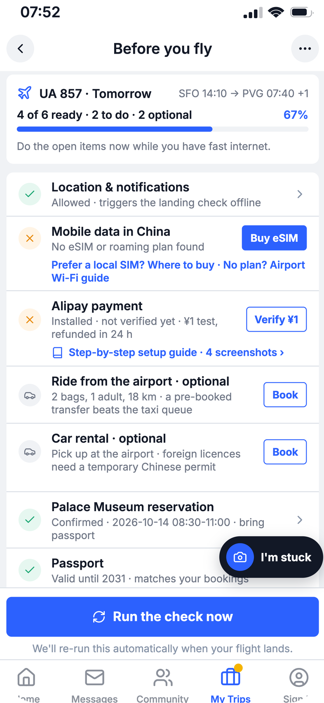
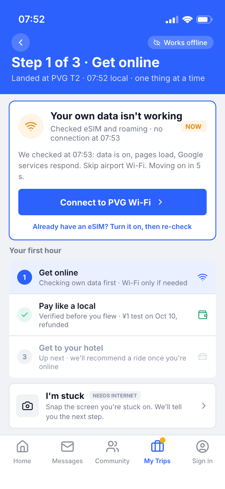
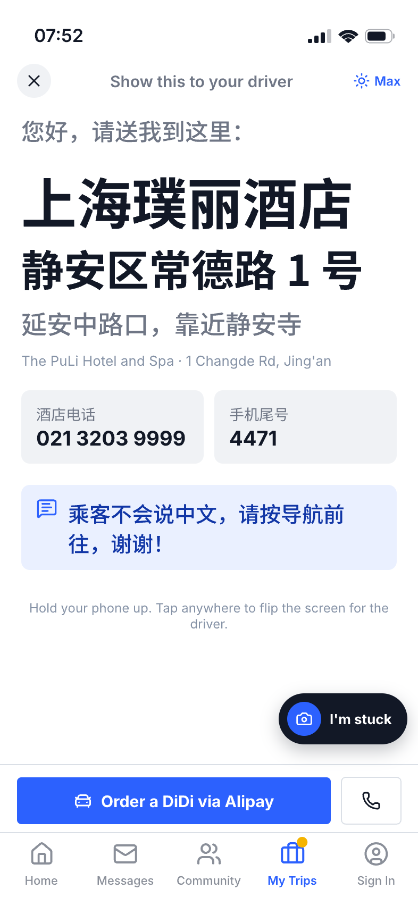

把行前准备、落地联网、支付和去酒店，放进 Trip.com——在游客需要时，告诉他下一步怎么做。



我们统计公开旅行笔记里，首次来华的自由行游客最常讨论的实务话题——看他们真正会卡在哪里。
规则词典逐句匹配，全程无大模型打分，每次命中可回溯到原词原句。深蓝 = Landing Check 已覆盖的 5 大模块——恰好是热度前五。
来自公开原帖的真实提问与吐槽：看过攻略、装好应用、甚至绑了卡，落地买瓶水还是不知道怎么付。
上网、支付、接机做成一张清单；支付宝 / TenPayGo 合并为一个“境内支付”待办，选一种做小额测试即可。
HTML / CSS / JS 构建交互界面；设计稿经 pen.dev 导出，Python 脚本组装为 H5。
FastAPI + Uvicorn 提供接口，Pydantic 校验，HTTPX 调模型。行前检查与交通推荐用规则计算。
DeepSeek 匹配截图/文字中的问题，再从知识库读步骤；不确定给候选，不可用时回退关键词。
JSON 维护 5 类场景、41 条记录，含步骤、备用办法、来源与核验日期，脚本校验并导出图文。
pytest + Playwright 检查接口与完整流程；GitHub Pages 托管展示页与 H5，Render 运行后端。
基于行程信息与实时需求，精准连接 Trip.com 现有旅行服务。
按行程与位置推荐可预订门票
城市体验、一日游等可预订服务
附近餐厅推荐，可衔接订座
在 Trip.com 首页功能区设置 Landing Check 入口。
结合机票 / 酒店订单与 My Trips，在「你可能还需要」里精准推荐。
旅行体验分享到社区，促进参与和后续互动。
票根经社交平台传播，带新访客进入 Landing Check。
连接行程信息、行前准备、落地指引与旅行服务，减少信息割裂和重复操作。
先解决问题，再推荐合适的服务，成为旅客愿意再次选择的旅行伙伴。
海外社媒、攻略与求助案例显示：网络、支付与交通问题常相互关联，而现有信息分散。
已构建可交互 H5，打通行前检查、落地指引、AI 排障、交通推荐与旅程分享主要流程。
支付 / 航班 / 订单仍为模拟数据；现场适用性与真实用户任务完成率尚待验证。
以浦东机场 T2 为起点，先验证真实旅客能否顺利完成落地任务，再连接 Trip.com 的行程与服务。
浦东 T2 首个试点，走通从行前准备到顺利上车的完整流程，据真实问题优化排障与备用方案。
在授权与平台支持下接入真实航班 / 酒店订单，自动带入抵达时间与地址；衔接 eSIM、接送机、客服。
从上海拓展到更多入境城市与机场，沿用任务编排与异常恢复，按当地服务条件调整路径。
从解决一个关键时刻的问题开始，从一次及时的帮助，建立对下一段旅程的信任。